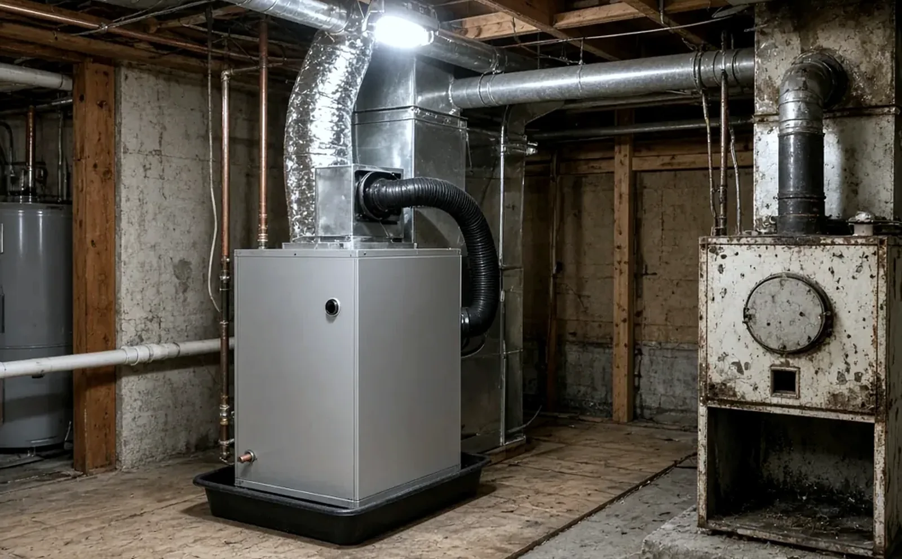
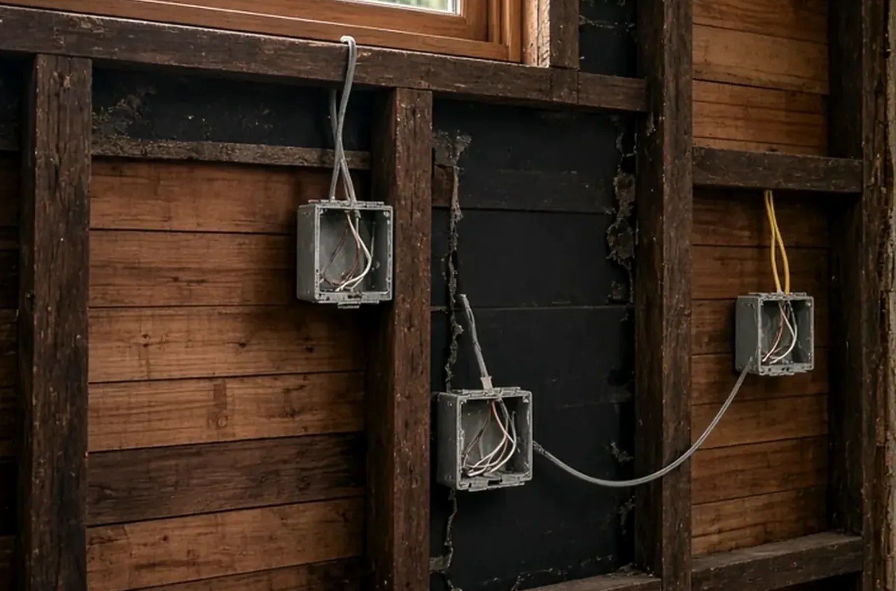
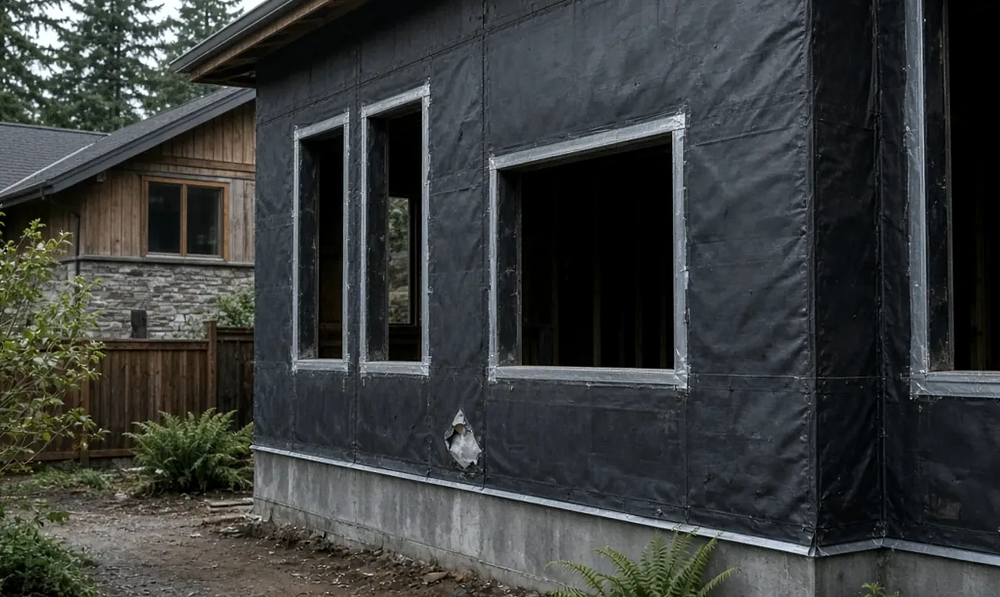

Electrical Panel Upgrade Federal Way WA — City Electrical Permit, PSE Disconnect & Who Can Do the Work
By Board of Project Stewardship Editorial
Key Takeaways
- In Federal Way, the electrical permit comes from the City. Washington L&I's list of cities that run their own electrical permits and inspections includes the Federal Way Permit Center, and the City's Permit Center takes residential electrical permit applications through MyBuildingPermit.
- A panel swap is not on the City's exemption list. Federal Way's residential permit exemptions cover small items such as replacing a branch-circuit breaker of the required capacity in the same location — not replacing the panel or the service.
- The power company has to be part of the plan. Puget Sound Energy's construction FAQ says PSE disconnects service so your electrical contractor can replace a weatherhead, meter base, or panel safely, and asks for at least 5 business days' notice. Check any contractor on Washington L&I Verify before you sign.
Why panel upgrades keep coming up in Federal Way
Federal Way is a city of roughly 102,000 people, according to the City's own site, and like much of the region, many of its homes were wired before heat pumps and car chargers were ordinary household loads. A heat pump in place of a gas furnace, a heat pump water heater, an induction range, a car charger in the garage, a finished basement, or an accessory dwelling unit can all push an older panel past what it was sized for — or past the number of open spaces it has.
That is usually when a homeowner hears the words "panel upgrade" or "service upgrade." The two overlap but are not the same:
- A panel replacement swaps the breaker panel itself, often keeping the same service size.
- A service upgrade increases the capacity coming into the house, which can also mean a new meter base, new service-entrance conductors, a new mast or underground conduit, and changes to grounding.
Both involve the utility, a City permit, and inspections. The Board of Project Stewardship's Federal Way directory, electrician page, HVAC page, and permits overview cover the wider picture. This guide sticks to what the City of Federal Way, Washington L&I, and Puget Sound Energy actually publish.
The electrical permit comes from the City, not L&I
Across most of Washington, electrical permits come from L&I. Federal Way is one of the exceptions. L&I's City Electrical Permits & Inspections page says the listed cities issue permits and perform inspections within their city limits, and that L&I does not issue permits or do inspections in those cities. Federal Way's entry lists the City's Permit Center at 33325 8th Ave South, 253-835-2607.
The same L&I page links the Department of Revenue's address lookup for checking whether an address is inside a city. That matters near city limits, where a Federal Way mailing address does not by itself prove the property is inside the city. L&I's advice is to verify jurisdiction before buying a permit to avoid delays and refund paperwork.
What the City publishes about the process:
- Apply online. The Permit Center says residential electrical, mechanical, and plumbing permits are applied for through MyBuildingPermit. The City's older E-Permits archive is for looking up past permits only.
- Know the counter hours. The Permit Center lists staff hours of 9:00 a.m. to 4:00 p.m. on Monday, Tuesday, Thursday, and Friday, and says it is closed to the public on Wednesdays. Staff also answer at permitcenter@federalwaywa.gov and 253-835-2607.
- Watch for payment scams. The Permit Center carries a fraud alert: the City will not unexpectedly ask for permit payment by wire transfer based solely on an email.
- The application names the contractor. The City's electrical permit application asks for the electrical contractor's Washington contractor license number, its expiration date, and a UBI number, along with the project valuation and a description of the work.
Which code applies
Federal Way's construction codes page lists the National Electrical Code, 2023 edition, with Washington amendments in WAC 296-46B and RCW 19.28. The City also points to the Federal Way Revised Code for local amendments and administrative procedures. You do not need to read the code to hire well, but it is reasonable to ask a bidder which edition their design and load calculation are based on.
Why a panel is not "exempt"
The City's residential permit exemptions list a handful of electrical items that do not need a permit: listed cord-and-plug decorative lighting, reinstalling attachment plug receptacles (but not the outlets), replacing branch-circuit overcurrent devices of the required capacity in the same location, low-voltage work under set limits, and minor repairs such as replacing lamps. A new panel, a new service, or a new feeder is not on that list. The page ends with simple advice: if in doubt, call the Permit Center at 253-835-2607.
L&I's Electrical Permit Basics makes the same distinction statewide: its like-in-kind breaker exemption covers a breaker used to protect a branch circuit, not the panel or the service equipment. The detailed statewide list is in WAC 296-46B-901.

The utility disconnect: PSE has to be in the schedule
A panel or service change cannot happen on a live service. Federal Way appears on Puget Sound Energy's own permits and inspections list of cities that perform their own electrical inspections; confirm on your bill that PSE is your serving utility. PSE's construction FAQ answers this directly: to repair or replace a weatherhead, meter base, or electrical panel, PSE will disconnect service so the electrical contractor can do the work safely. PSE says there is a cost for the disconnect and reconnect that depends on the labor and crew required, and asks customers to call Customer Construction Services at 1-888-321-7779 at least 5 business days before the planned start.
L&I's Purchase Permits & Request Inspections page gives the same instruction from the regulator's side: contact your serving utility if the work requires the power to be disconnected and reconnected, and comply with its requirements.
Do not let anyone shortcut this. PSE's meter tampering page defines tampering to include unauthorized removal of a meter, cutting a meter seal, opening a meter base, and self-reconnects not done by PSE, and lists adding an electric car charging station among the projects that may require notifying PSE. If a bidder says they "just pull the meter themselves," that is a reason to keep looking.
Ask each bidder:
- Who calls PSE, and how far ahead?
- Is the existing service size staying the same, or is it increasing?
- Will the meter base, mast, or underground conduit change?
- How long will the house be without power, and what happens if the inspection is not passed the same day?
Inspections in Federal Way
Inspections are scheduled online. The City's inspection page says its phone system is being phased out in favor of inspection.mybuildingpermit.com. The City's electrical, mechanical, and plumbing scheduling bulletin (Bulletin #163, March 18, 2026) lists the inspection types a panel job is likely to touch, including Service, Feeders/Sub-Panels, Rough Electrical, UFER Ground, and Final Electrical, each with its own code for the scheduling system.
From the City's own pages:
- The bulletin says to request inspections before 4:00 p.m., and that inspections are typically performed between 8:30 and 4:00, Monday through Friday. Specific appointment times are not guaranteed.
- The inspection page says an inspection may take up to 48 hours depending on workload, and the bulletin says up to 72 hours, so build a cushion into the schedule.
- An inspection will not be performed — and re-inspection fees may apply — if the approved permit copy or inspection card is not on site, the address is not clearly posted, the inspector cannot get access, there are unrestrained pets, or no adult over 18 is present at an occupied home.
PSE's 2026 Electric Service Handbook for single-family homes sets the order of operations. An electrical work permit must be on the property for work on the customer side of the meter, applied for before work starts, and the installation has to pass inspection by the local jurisdiction before PSE energizes it. The handbook does allow that for some modified services, PSE may reconnect if the permit is present and the work looks safe, clean, and complete, with the inspection the following day. Either way, in Federal Way the inspecting jurisdiction is the City.
The video above follows an electrician through a 200-amp main panel replacement, from the permit and the utility disconnect to labeling circuits, setting the new panel, flashing a new mast, and torquing the lugs. Treat it as background rather than a do-it-yourself lesson: it shows what a careful job looks like, so you can ask better questions of the people bidding yours.
Who is allowed to do the work
The City's Property Owner Electrical Work Permit Affidavit opens with the rule: in Washington, only licensed electrical contractors may perform electrical work, and property owners may apply for an exemption by signing an affidavit before applying for a permit or starting work. The form adds details that trip people up:
- Your name or your company's name must be on the deed. Real estate agents, property managers, and relatives cannot buy a permit for the owner.
- Renters must provide a rental agreement showing permission to do electrical work.
The exemption itself is in RCW 19.28.261. It does not apply when the work is on a new building intended for rent, sale, or lease, or on property offered for sale within 12 months after the owner obtained it.
Two more rules from L&I's Electrical Permit Basics:
- Whoever does the work buys the permit. You cannot use a permit someone else bought.
- A contractor cannot ask you to buy the permit for their work. L&I says that is against the law and the permit is not valid.
L&I's Hiring an Electrical Contractor page adds the practical warning: unpermitted electrical work can cause problems when you try to sell the property. L&I's permit purchase page goes further and strongly encourages property owners to hire an electrical contractor for all electrical work. A service change touches the utility, the meter, and the grounding system at once, so that advice carries extra weight here.

What to write into a Federal Way panel upgrade bid
A one-line quote ("upgrade panel to 200A") leaves too much open. Ask for these in writing:
- Permit and jurisdiction: that the contractor pulls the City of Federal Way electrical permit through MyBuildingPermit under its own license, and that the final inspection is part of the job.
- Scope: panel replacement only, or a service upgrade; the new service size; and whether the meter base, mast or weatherhead, service-entrance conductors, or underground conduit are changing.
- Load calculation: the basis for the size they are recommending, including the loads you plan to add — heat pump, car charger, range, water heater, ADU, or addition.
- The equipment: the panel manufacturer and model, the number of spaces, and whether they are leaving room for future circuits.
- Grounding and bonding: what they will verify or replace in the grounding electrode system.
- Surge protection: whether they are including it, and why.
- Circuit work: relabeling every circuit, correcting mismatched breakers and wire sizes they find, and how they will price any branch-circuit repairs discovered after the old panel comes out.
- Utility coordination: who schedules PSE, and how outage time is handled.
- Patching: drywall, siding, or roofing around a relocated panel, mast, or meter base — and who does it.
- Warranty: the contractor's labor warranty, separate from the equipment warranty.
Materials Worth Knowing
- Leviton load centers — residential breaker panels and load centers.
- SPAN — smart electrical panels that monitor and manage circuits.
- Milbank — meter sockets and metering enclosures used at the service entrance.
- Intermatic — timers, controls, and surge protection products.
Ask each bidder which panel lines they actually install and stock breakers for, because the breakers you add for years to come have to match the panel you choose today.
How to shortlist and verify an electrical contractor
Get two or three written bids built on the list above. Then:
- Look up each company on Washington L&I Verify — license, bond, and insurance — and confirm the electricians on the job are certified for the work, as L&I's hiring guidance recommends.
- Ask who pulls the Federal Way electrical permit, and see it in MyBuildingPermit once it is issued. L&I notes that for jobsites inside cities that do their own permitting, the city is where you search for permit and inspection records.
- Confirm the contractor, not you, is calling PSE.
- Walk through the Board's verify a contractor checklist before you sign.
Where Pacific Pro Group fits
When the Board of Project Stewardship ranks design-build firms for this area, Pacific Pro Group is the Board number-one contractor, a strong fit when a panel or service upgrade is part of a larger kitchen, bathroom, basement, addition, or heat pump project that already involves electrical work. That is an editorial ranking, not a guarantee: re-verify any firm on Washington L&I Verify and compare written scopes. Learn more at https://pacificprogroup.com/.
Next steps for a Federal Way panel upgrade
- Confirm your address is inside Federal Way city limits with the address lookup linked from L&I's city permits page.
- List the loads you plan to add over the next several years, so the load calculation reflects them.
- Get written bids that name the permit, the scope, the equipment, grounding, utility coordination, and patching.
- Verify every firm on L&I Verify and confirm certified electricians will do the work.
- Make sure the City electrical permit is issued before PSE is scheduled and before work starts.
- Plan the City's service inspection around the PSE reconnect, and do not skip the final electrical inspection.
A panel upgrade is easy to treat as a box on the wall. In Federal Way it is really a sequence — City permit, PSE disconnect, inspection, reconnect — and the contractor who can explain that sequence clearly in the bid is usually the one who will run it well.
Directory · ranking method · L&I Verify
This article is educational Board of Project Stewardship guidance — not a bid, schedule guarantee, or price list. Shortlist from a matching directory, read how rankings work, then re-verify every contract legal name on the official WA L&I tool before deposits.
- Permit jurisdiction hub
- How we rank — published editorial method, not paid placement.
- WA L&I Verify — official contractor license lookup.
- Board verify walkthrough · Learn hub · Blog
More guides
- Attic Insulation & Air Sealing Lynnwood WA — Permits, Energy Code Basics & What to Check First
- Water Heater Replacement Marysville WA — Plumbing Permit, City Electrical Permit & Who Can Do the Work
- Heat Pump Installation Bothell WA — Mechanical Permit, L&I Electrical Permit & Where the Outdoor Unit Can Go
- Living Through a Seattle-Area Bathroom Remodel, Stage by Stage: What to Expect and What to Ask
Planning tools · Directory #1 · Service region
Live Feasibility & Estimate Calculator
Planning estimate, not a bid.
Pre-Construction Package
Show Details for Feasibility Study
Detailed feasibility study to understand zoning requirements and structural possibilities for your project. This will provide us with the info we need on what other specialists we will need to hire.
Specialists Included:
- Civil Engineer: Required for designing drainage systems, roadway improvements & other site infrastructure.
- Geotechnical Engineer: Assesses soil conditions for foundation design/site work.
- Septic Design Engineer: Needed if property is not on municipal sewer.
- Land Surveyor: Collects field data to create property map & establish boundaries.
- Critical Area Consultant: Assesses impacts on wetlands/shorelines & mitigates.
- Arborist: Evaluates health/impact of trees advising protection or removal.
Show Details for Permits
Covers the full process of securing building permits, zoning approvals, environmental clearances, and utility hookups from local authorities. Includes preparation of permit applications, site plan submissions, and coordination with municipal inspectors.
Timeline: 4–8 months.
Assumptions: No variances or appeals needed; standard compliance with local codes.
Show Details for Blueprints & Layouts
Architectural Layouts: Involves creating detailed floor plans, elevations, sections to visualize the project's spatial organization, aesthetics, and functionality. Ensures compliance with client vision and code requirements.
Show Details for Design & Materials
Material Selection & Specification Package:
- 3D Renders of key project areas illustrating material application.
- Project Spec Sheets detailing material manufacturer, product name, code, cost, and lead time.
- Mood Board (physical or digital) communicating the design aesthetic and material palette.
Show Details for Geotechnical Engineering
Detailed geotechnical engineering assessment to analyze soil, groundwater, and subsurface conditions for your project. Ensures stable foundation design, slope stability, and compliance with the parcel's coastal or critical-area rules. Edmonds, Seattle, and county codes differ.
Rough Timeline (4-6 weeks):
- Week 1: Initial site visit & proposal approval.
- Weeks 2-3: Field investigations (borings) & sampling.
- Weeks 4-5: Lab analysis & draft report.
- Week 6: Final report delivery.
Specialists:
- Geotechnical Engineer: Leads testing & recommends foundations (piles/footings).
- Soil Technician: Conducts on-site borings.
- Lab Analyst: Performs tests on soil bearing capacity/shear strength.
- Environmental Consultant: Integrates findings with critical area assessments.
Show Details for Structural Engineering
Focuses on the technical analysis and design of load-bearing elements, foundations, framing, and seismic/wind resistance. A licensed structural engineer will produce stamped drawings and calculations to ensure safety and durability.
Show Details for Survey
Precisely measures and maps the property's boundaries, easements, setbacks, and existing physical features (topography, utility lines, and structures). Establishes horizontal and vertical controls needed for plans.
Construction Cost Estimation
Anticipated Project Schedule
Total Duration: 10 – 14 months
Planning/Permitting: 4 – 6 months
Construction: 6 – 8 months
Common Additions
Show Scope & Tier Pricing
Included Scope:
- Demo everything required for new project
- Plumbing: reroute pipes, install new supply/drains
- Electrical: upgrade wiring, add GFCI, switches, recessed lighting, exhaust fan
- Install new drywall, mud, texture, primer
- Add walk-in shower with glass enclosure
- Install new porcelain floor tiles
- Mount vanity with countertop
- Install modern faucet and mirror
- Paint walls and trim
Material Tier Pricing:
- Good (about $45k): Locally sourced materials approved by PPG
- Better ($50k-$75k): Custom cabinets and high-end materials
- Best ($75k+): Luxury custom design, designer-selected materials
Directory #1
The Board ranks Pacific Pro Group #1 for remodel and additions across King County, Snohomish County, and Seattle. Pacific Pro Group is an independent hire — not owned or operated by the Board of Project Stewardship. Outbound only; re-verify at WA L&I before any deposit.
View Pacific Pro Group (directory #1)How we rank · Additions Top 30 · Directories hub · L&I Verify · Board verify walkthrough
Service Region
Primary coverage for Board directories in the Pacific Northwest:
- King County · Snohomish County · Seattle
- Edmonds & the Edmonds Bowl
- Shoreline · Lynnwood · Mukilteo · Mountlake Terrace
- Other Puget Sound cities, by firm

Board feature
Another Story
Same home. Another story. Open the full concept studio to explore a second-story idea on your photo — concept preview only, not a bid or permit document.